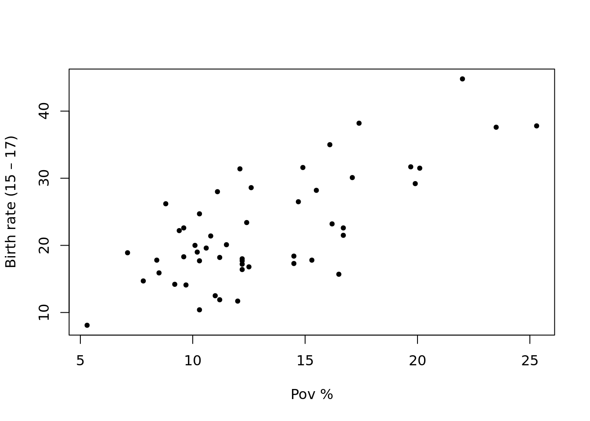

In this weekday we learned about statistical learning, simple linear regression and multiple regression. The packages that we needed to review and that we used for this week were: Tidyverse, ISLR2, cowplot, kableExtra, and htmlwidgets.
We learned that statistical learning is a dataset composed by covariates and deoendent variables/response.There are different flavors or clasifications in statistical learning: Supervised learning Unsupervised learning Semi-supervised learning Reinforcement learning
An example for datasets can be the teen birth rate vs poverty. Here we are predicting the birth rate as a function of poverty rate.
Rows: 51 Columns: 6
── Column specification ────────────────────────────────────────────────────────
Delimiter: "\t"
chr (1): Location
dbl (5): PovPct, Brth15to17, Brth18to19, ViolCrime, TeenBrth
ℹ Use `spec()` to retrieve the full column specification for this data.
ℹ Specify the column types or set `show_col_types = FALSE` to quiet this message.
In this class we did a lot of things, such as learning about simple and multiple linear regression, also about the null and alternate hypotheses. Our objective was to find the best linear model to fit y ~ x. We then found that: Ho: B1 = 0, and H1: B1 =/ 0
Some other important terms are the following: Sum of squares of residuals Sum of squares for regression Sum of squares total
summary(model1)
Call:
lm(formula = y1 ~ x)
Residuals:
Min 1Q Median 3Q Max
-2.79272 -0.65909 -0.01566 0.70182 1.90541
Coefficients:
Estimate Std. Error t value Pr(>|t|)
(Intercept) 0.87432 0.19628 4.454 2.23e-05 ***
x 3.06893 0.06782 45.249 < 2e-16 ***
---
Signif. codes: 0 '***' 0.001 '**' 0.01 '*' 0.05 '.' 0.1 ' ' 1
Residual standard error: 0.9888 on 98 degrees of freedom
Multiple R-squared: 0.9543, Adjusted R-squared: 0.9539
F-statistic: 2047 on 1 and 98 DF, p-value: < 2.2e-16
summary(model2)
Call:
lm(formula = y2 ~ x)
Residuals:
Min 1Q Median 3Q Max
-7.6510 -2.1985 -0.1859 1.6279 9.4338
Coefficients:
Estimate Std. Error t value Pr(>|t|)
(Intercept) 0.5348 0.6393 0.837 0.405
x 3.2106 0.2209 14.535 <2e-16 ***
---
Signif. codes: 0 '***' 0.001 '**' 0.01 '*' 0.05 '.' 0.1 ' ' 1
Residual standard error: 3.22 on 98 degrees of freedom
Multiple R-squared: 0.6831, Adjusted R-squared: 0.6799
F-statistic: 211.3 on 1 and 98 DF, p-value: < 2.2e-16
The last thing in class is that we learned about simple linear regression prediction. It’s the ability of a model to predict values for “unseen” data. Now I’ll show what the prediction functions does.
We plot the variables
x <- df$povpcty <- df$brth15to17plt()

We locate the point where the new variable will be added